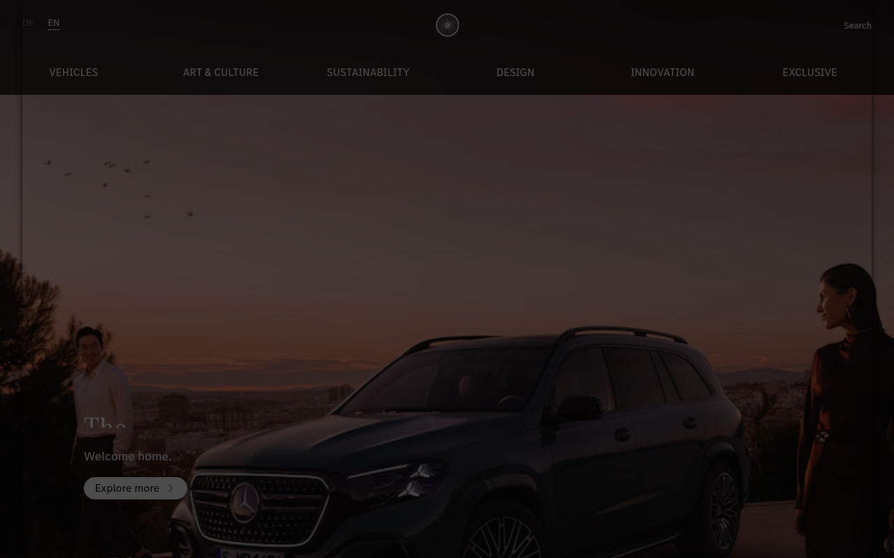

Mercedes-Benz — live CSS는 100이 아니라 400/700
current `www.mercedes-benz.com/en/` CSS를 `curl_cffi`로 다시 수집해 보니, 기존 문서의 핵심 가정 두 가지가 틀려 있었다. body weight `100`은 현재 소스에 없고 `MBCorpo Text` 400/700만 감지됐다. 요청 메모의 `#BABABA` / `#0A0A0A`도 current CSS에는 정확히 등장하지 않았고, 실제 선언값은 `#9F9F9F`, `#BBBBBB`, `#0D0D0D`, `#000000` 쪽이다.

body {
font-family:
"MBCorpo Text",
"DaimlerCS-Regular",
"DaimlerCSArab-Regular",
sans-serif;
font-weight: 400;
}
.stage--dark {
background: #000000;
color: #FFFFFF;
--breadcrumb: #9F9F9F;
}
.stage--light {
background: #FFFFFF;
color: #000000;
--breadcrumb: #767676;
}
.hero-copy {
grid-template-columns:
repeat(6, 2fr);
gap: 1.1428571429rem;
}
@media (min-width: 768px) {
.hero-copy {
grid-template-columns:
repeat(8, 2fr);
}
}
font-weight: 100으로 두는 것과, source에 없는 #BABABA / #0A0A0A를 "Mercedes 공식 CSS 값"처럼 적는 것.
출처와 수집 기준
이번 업데이트는 기존 예시 파일이 아니라 live HTML/CSS를 다시 긁어서 정리했다. 핵심은 "옛 inline CSS 추정"을 버리고 현재 `index.css`와 `mb-main.css` 두 파일만 기준으로 재서술한 것이다.
https://www.mercedes-benz.com/en/https://www.mercedes-benz.com/static/frontend/mbcom-frontend/3.1.7/assets/index.csshttps://www.mercedes-benz.com/system/css/mb-main.css--wb-*#BABABA와 #0A0A0A가 정확히 등장하지 않았다. closest declared tokens는 #BBBBBB와 #0D0D0D, 실제 stage background는 #000000다.
워크벤치 구조
Mercedes-Benz current 프런트는 token layer와 component layer가 분리되어 있다. root는 `--wb-*`, 화면 컴포넌트는 `brandhub-*`, page patch는 `.page`, `.footnotes__wrapper` 쪽이다.
타이포그래피
current CSS는 `font-weight: 100` 미학이 아니라, `MBCorpo Text` 400/700과 `MBCorpo Title` 400을 전제로 한 oversized headline 시스템이다.
MBCorpo Text — 실제 WOFF2 자산명은 MBCorpoSText-Regular-Web.woff2MBCorpo Title — MBCorpoATitleCond-Regular-Web.woff2DaimlerCS-Regular, DaimlerCSArab-Regular, DaimlerCAC-Regular, DaimlerCACArab-Regular3.5714285714rem · 4.2857142857rem · weight 400
7.1428571429rem · 7.1428571429rem · weight 400
1.1428571429rem · 1.7142857143rem · weight 400
1.2857142857rem · 2rem · weight 400
1.1428571429rem · overview는 `#CCCCCC`, content는 `#767676`
컬러
homepage mood는 monochrome다. Workbench root에는 여러 hue family가 선언돼 있지만, 실제 Mercedes-Benz stage와 breadcrumb에서 반복되는 값은 black / white / chrome neutral이다.
#000000 · breadcrumb #9F9F9F · text #FFFFFF#FFFFFF · breadcrumb #767676 · text #000000#CCCCCC at 1.1428571429rem#919191 on black footnotes background#BABABA와 #0A0A0A는 current CSS에서 미검출이었다. 가장 가까운 실제 선언값은 #BBBBBB와 #0D0D0D, 실제 hero/stage 배경은 #000000다.
간격과 레이아웃
Mercedes-Benz stage copy는 token scale과 별도의 oversized layout rhythm을 같이 쓴다. root spacing은 깔끔하지만 hero wrapper padding-top은 매우 공격적으로 크다.
--wb-spacing-3xs= .25rem--wb-spacing-xxs= .5rem--wb-spacing-xs= 1rem--wb-spacing-s= 1.5rem--wb-spacing-m= 2rem--wb-spacing-l= 3rem--wb-spacing-xl= 4rem--wb-spacing-xxl= 5rem
- input radius
.0714285714rem— 사실상 1px - button radius
1.75rem— CTA pill - button transition
background-color .5s, color .25s box-shadowdeclarations는 current CSS에서 미검출
- base:
repeat(6, 2fr)/ gap1.1428571429rem - 768+:
repeat(8, 2fr)/ gap2.2857142857rem - 1024+:
repeat(12, 2fr)/ gap1.7142857143rem - 1440+: gap
2.8571428571rem - 1920+: gap
3.4285714286rem
- base LR
1.1428571429rem/ top12.8571428571rem - 768+ LR
2.2857142857rem/ top17.8571428571rem - 1024+ LR
6.5714285714rem/ top10.7142857143rem - 1440+ LR
8.2857142857rem/ top12.8571428571rem - 1920+ LR
8.5714285714rem/ top17.1428571429rem
컴포넌트
current CSS에서 재현 가치가 높은 건 hero stage, breadcrumb, footnotes, 그리고 `.salesforcediplomats` controls다.
Stage Hero
`brandhub-article-stage-text--background-black` / `--background-white` modifier가 텍스트와 breadcrumb를 함께 뒤집는다.
MBCorpo Titleheadline size
3.5714285714rem → 7.1428571429rem → 8.5714285714remblack stage
#000000 / #FFFFFF / #9F9F9Fwhite stage
#FFFFFF / #000000 / #767676
Breadcrumb
overview breadcrumb는 `#CCCCCC`, content breadcrumb는 `#767676`로 나뉜다. 둘 다 `1.1428571429rem` 스케일이다.
.page .breadcrumb .wb-breadcrumbsize
1.1428571429removerview
#CCCCCCcontent
#767676
Footnotes
footer/footnotes는 black slab 위에 `#919191` 카피를 얹고 자체 spacer 토큰을 재정의한다.
#000000text
#919191spacer-s
2.2857142857remspacer-m
4.5714285714remspacer-l
6.8571428571rem
Form Controls
`.salesforcediplomats` controls만 radius/motion 수치가 명확하게 드러난다. input은 1px hairline, button은 pill이다.
.0714285714rem solid var(--wb-grey-60)input radius
.0714285714rembutton radius
1.75rembutton transition
background-color .5s, color .25s
CSS 스니펫
아래 스니펫은 current CSS에서 직접 확인된 값만으로 묶었다. body 100 weight나 요청 메모의 미검출 hex는 포함하지 않았다.
:root {
--mb-font-display: "MBCorpo Title", "DaimlerCAC-Regular", "DaimlerCACArab-Regular", serif;
--mb-font-text: "MBCorpo Text", "DaimlerCS-Regular", "DaimlerCSArab-Regular", sans-serif;
--mb-black: #000000;
--mb-white: #FFFFFF;
--mb-chrome: #9F9F9F;
--mb-chrome-soft: #BBBBBB;
--mb-muted: #767676;
--mb-footer: #919191;
--mb-space-xs: 1rem;
--mb-space-s: 1.5rem;
--mb-space-m: 2rem;
--mb-space-l: 3rem;
--mb-space-xl: 4rem;
--mb-space-xxl: 5rem;
--mb-radius-hairline: .0714285714rem;
--mb-radius-pill: 1.75rem;
--mb-transition-ui: background-color .5s, color .25s;
}
body {
font-family: var(--mb-font-text);
font-weight: 400;
background: var(--mb-white);
color: var(--mb-black);
}
.mb-stage--dark {
background: var(--mb-black);
color: var(--mb-white);
--mb-breadcrumb: var(--mb-chrome);
}
.mb-stage--light {
background: var(--mb-white);
color: var(--mb-black);
--mb-breadcrumb: var(--mb-muted);
}
.mb-hero-copy {
display: grid;
grid-template-columns: repeat(6, 2fr);
gap: 1.1428571429rem;
padding-top: 12.8571428571rem;
}
@media (min-width: 768px) {
.mb-hero-copy {
grid-template-columns: repeat(8, 2fr);
gap: 2.2857142857rem;
}
}
@media (min-width: 1024px) {
.mb-hero-copy {
grid-template-columns: repeat(12, 2fr);
gap: 1.7142857143rem;
}
}
Do / Don't
이번 업데이트의 목적은 "Mercedes 느낌"을 살리는 동시에, source에 없는 옛 규칙을 걷어내는 것이다.
Do
- body/UI는
MBCorpo Text400을 기본으로 둔다. - hero display는
MBCorpo Title400과 oversized scale을 유지한다. - black stage에서는
#9F9F9F, white stage에서는#767676breadcrumb를 쓴다. - 6/8/12-column responsive grid와 큰 padding-top rhythm을 지킨다.
- 대부분 sharp edge, CTA만 pill radius를 허용한다.
Don't
- stale 문서처럼 body를
font-weight: 100으로 두지 않는다. - current CSS에 없는
#BABABA,#0A0A0A를 source-exact 값처럼 적지 않는다. - Workbench의 blue/red/yellow palette를 homepage 핵심 팔레트처럼 과용하지 않는다.
- 모든 필드와 카드에 12px 이상 radius를 넣어 soft UI로 만들지 않는다.
- box-shadow-heavy, animation-heavy 인터랙션을 추가하지 않는다.